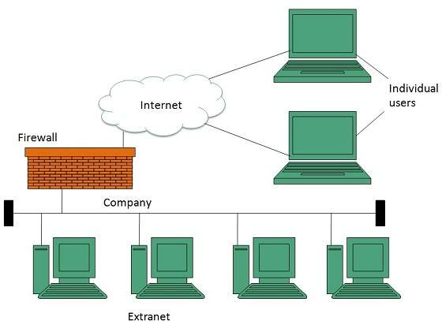

An Extranet is a controlled private network that allows an organisation to share specific internal resources with selected external parties such as suppliers, partners, clients, or vendors. It sits between an intranet (fully private) and the Internet (fully public).
How an Extranet Differs from an Intranet
Intranet: Only accessible to internal employees of an organisation.
Extranet: Accessible to a controlled group of external users in addition to internal employees.
Internet: Accessible to anyone in the world.
Common Uses of an Extranet
Allowing suppliers to view inventory levels and place orders.
Giving clients access to project progress reports or account information.
Sharing documents and product catalogues with business partners.
Enabling collaboration between two or more organisations on a joint project.
Security in an Extranet
Because an extranet involves external users, security is critical. Extranets typically use:
Usernames and passwords to authenticate external users.
Firewalls to limit access to only permitted areas.
VPNs (Virtual Private Networks) to encrypt data transmitted over the public Internet.
SSL/TLS encryption to protect data in transit.
Advantages of an Extranet
Improves collaboration with external partners and clients.
Reduces the need for physical meetings or paper-based communication.
Allows controlled sharing of resources without exposing the entire intranet.
Illustration

Figure: An extranet extends an organisation's intranet to selected external users.